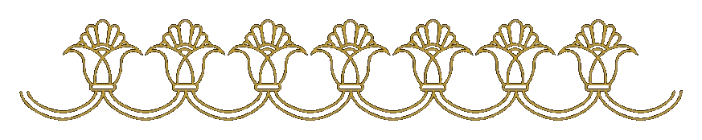
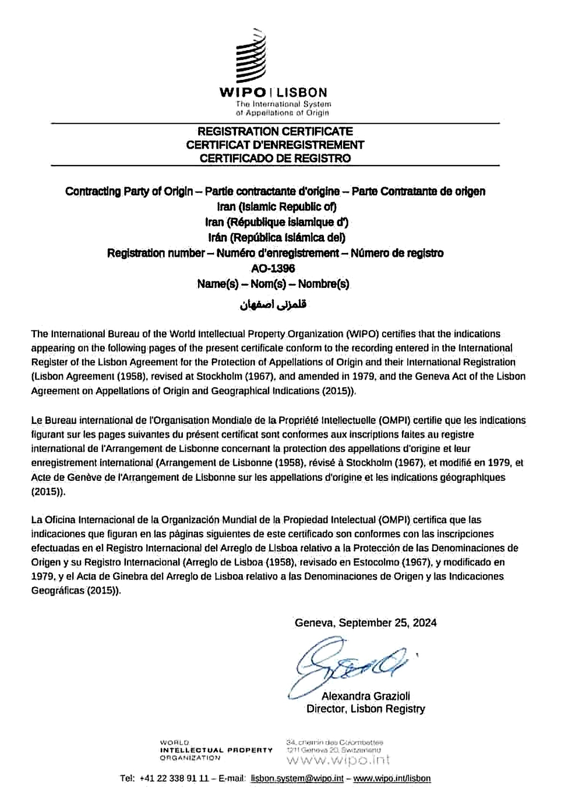

Padyar TakukContemporary Persian Takuk / Rhyton · Isfahan
Padyar Takuk · Isfahan
Persian Takuk / Rhyton Artworks, Reimagined Today
Takuk is not an ordinary cup. It is a Persian animal-vessel form — between vessel, sculpture and ceremony — whose recognized Iranian examples reach back about 2,500 years.
After years of study, experimentation and gathering knowledge from old Iranian metalworking and sculptural traditions, Padyar Takuk revives this language today through seamless, one-piece metal artworks shaped by hand by Hadi Hafezi in Isfahan.
Newly created contemporary artworks. Not antiquities. Not archaeological objects. Not historical replicas.
Guardian Falcon · Contemporary Persian Takuk / Rhyton

What it isPersian animal-vessel form
Why valuableVessel · animal · memory
Why difficultSingle body · hand-shaped metal
01 · The Form
What is Takuk?
Takuk — often known internationally as rhyton — is not a normal cup. It is a Persian animal-vessel form: a vessel that takes the body, head or presence of an animal and turns it into part of the object itself.
In its recognized Iranian examples, especially from the Achaemenid world, this form reaches back about 2,500 years. In Padyar Takuk, that ancient vessel logic is revived as contemporary metalwork through years of study and practice — not as an antiquity or historical replica.
Vessel
It holds.
Like a cup, it relates to liquid; unlike a normal cup, its form turns holding and pouring into a meaningful act.
Animal
It becomes a body.
The animal is not decoration placed on the vessel. It gives the vessel identity, force and presence.
Sculpture
It has presence.
A takuk is encountered as an artwork: a body, a vessel and a cultural form at the same time.
Open deeper explanation
Rhyton is the term more widely used in international art history, while takuk is the Persian name used for this animal-vessel idea. Padyar Takuk presents newly created contemporary works and approaches takuk-making as a revival of an old Persian vessel-body language, not as ancient objects, archaeological material or historical replicas.
تکوک یک جام معمولی نیست؛ ظرفی جانورپیکر و ریشهدار در فرهنگ ایران است. پادیار تکوک پس از سالها مطالعه، آزمون و گردآوری دانش از سنتهای کهن فلزکاری و پیکرهسازی ایران، این زبان را به شکل اثری معاصر زنده میکند؛ نه بهعنوان عتیقه، کپی تاریخی یا شیء باستانشناسی.
02 · The Value
Why is it valuable?
The value of a takuk is not only in metal, weight or surface beauty. Its value is in the rare union of vessel, animal body, ritual flow and cultural memory.
A takuk is valuable because it turns a simple object into a symbolic body. The animal is not an ornament; it becomes part of the vessel’s identity. This is why a takuk should not be understood as tableware, souvenir, ordinary craft or decoration.
03 · The Making
Why does the making matter?
Making a takuk is difficult because the artist is not only making a container. The metal must become a body: hollow, balanced, animal-like, sculptural and alive.
A single mistake in proportion, pressure, thickness, curve or movement can weaken the whole work. This is why the making itself is part of the value.
Padyar Takuk presents this work as a contemporary revival of takuk-making: the result of years of effort to study, collect and rework old Iranian knowledge of metal shaping, animal form and sculptural vessel construction.
In the Padyar Takuk practice, each principal work begins from a single sheet of metal and is shaped entirely by hand into a seamless one-piece takuk/rhyton body — without molds, welding, seams, assembled parts, industrial machinery or modern production methods. This makes the revival not only a visual return to takuk, but a demanding reconstruction of hand, metal, body and balance.
Single sheet
The work begins from one sheet of metal.
One body
Animal and vessel remain continuous.
No mold / no weld
No molds, seams, welding or assembly.
Controlled risk
Thickness, pressure, structure and identity must be controlled together.
Virtual Gallery
Contemporary Persian animal-vessel works
A focused viewing room from the Padyar Takuk practice. Each work should be read through three simple questions: what animal-vessel form does it create, what cultural value does it carry, and what difficulty of making does it reveal?
Gallery Focus
The Bull of Parseh / تکوک گاو پارسه
A bull-form takuk where the animal is not added as decoration; the vessel and the bull are read as one body.
Its value is in bringing Parseh memory, animal strength and difficult hand-shaped metalwork into a contemporary form — not an archaeological claim or historical replica.
Three Ram-Head Silver Cup — an archival pure-silver animal-vessel work. Full public page not released yet; documentation is reserved for professional review.
Documentation
Documentation, Authenticity & Private Review
The works are presented through contemporary-art language and careful documentation. The public website shows only reviewed public-safe material and protects the works from confusion with antiquities, archaeological objects, historical replicas, tableware, silverware or decorative vessels.
Hadi Hafezi
Hadi Hafezi is an Iranian artist-maker and metalworker based in Isfahan, working through hand-shaped metal and the contemporary continuation of Persian takuk/rhyton forms.
His practice focuses on animal-vessel bodies, seamless construction, symbolic presence and the discipline of the hand. After years of effort, study and technical experimentation, Padyar Takuk presents takuk-making as a living artistic language revived for the present rather than a historical replica.
Review materials
Selected works prepared for private review may include an artwork sheet, certificate of authenticity, not-antiquity statement and process documentation where documented.
Further documentation and presentation context are shared only after curatorial or professional review.
Isfahan metalwork context
The Padyar Takuk practice is rooted in Isfahan’s long metalworking environment. The WIPO Lisbon document confirms the international registration of Qalamzani Isfahan, presented here as cultural and regional background for Isfahan metalwork.
This document helps clarify the wider artistic and technical environment from which the Padyar Takuk practice emerges.
Documentation image: WIPO Lisbon document confirming the international registration of Qalamzani Isfahan.

فارسی / توضیح کوتاه اصالت و زمینه
آثار پادیار تکوک آثار معاصر هستند؛ عتیقه، شیء باستانشناسی، کپی تاریخی یا بازسازی موزهای نیستند. سند وایپو تأیید میکند که قلمزنی اصفهان دارای ثبت جهانی/بینالمللی در نظام لیسبون وایپو است؛ این سند در سایت برای نشاندادن بستر فرهنگی و فنی فلزکاری اصفهان آمده است.
Professional Contact
For curatorial, gallery, collector and cultural contexts
Professional inquiries are reviewed individually. Documentation and presentation context may be shared after curatorial or professional review.